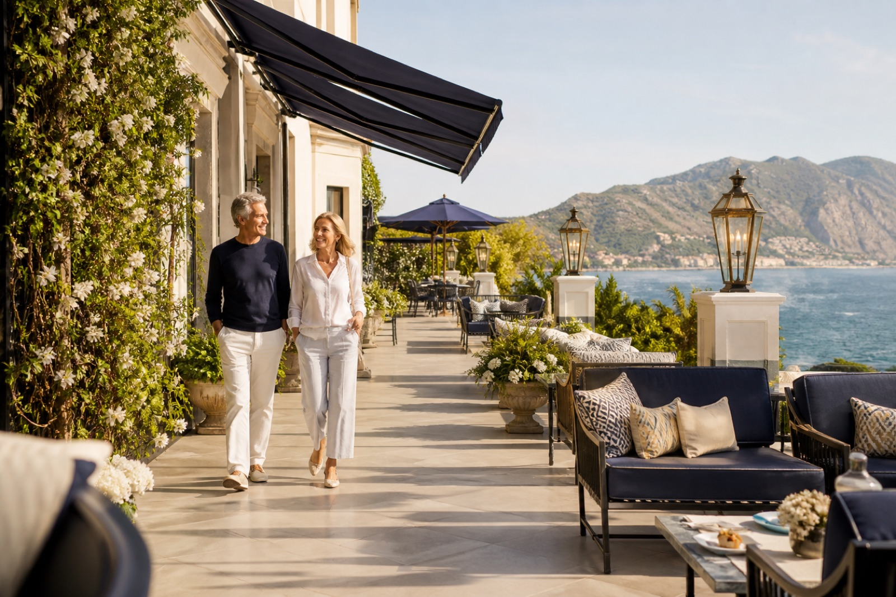

Prévenir le renoncement
Agir avant que sortir, voyager ou profiter d’un lieu ne devienne trop compliqué.
NOTRE HISTOIRE
Pour éviter qu’une accumulation de petits efforts ne transforme un lieu agréable en raison de renoncer.
Un lieu peut être beau, accueillant et conforme, tout en demandant trop d’efforts à certaines personnes.
Une poignée difficile, un siège trop bas, un parcours peu lisible ou un équipement mal placé paraissent parfois secondaires. Ensemble, ces détails peuvent pourtant fatiguer, inquiéter ou réduire l’autonomie.
À Portée est née pour rendre cette expérience visible et aider les lieux à agir avant que les difficultés ne deviennent des renoncements.

Agir avant que sortir, voyager ou profiter d’un lieu ne devienne trop compliqué.
Observer ce que les personnes vivent réellement, au-delà de la seule apparence du lieu.
Proposer des évolutions utiles et proportionnées, sans dénaturer l’identité du site.
Voyager, sortir, découvrir, partager et continuer à être bien chez soi.
À Portée a été nominée aux Trophées SilverEco 2026, une reconnaissance de sa vision et de son utilité.